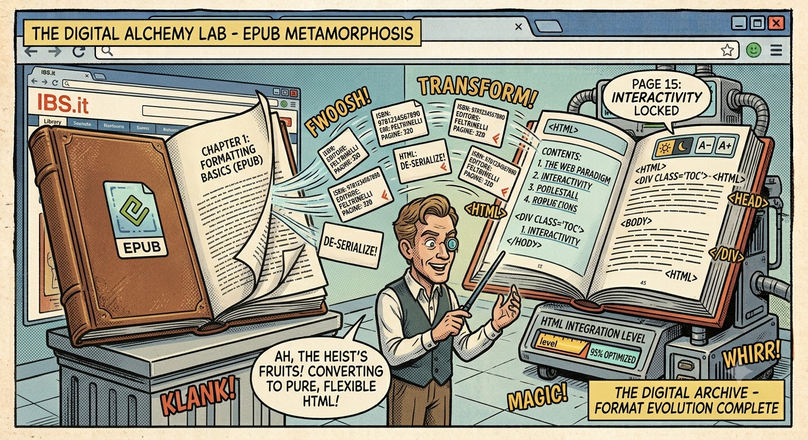

← Torna ai progettiepub2site
Converti qualsiasi EPUB in un sito web statico auto-contenuto — leggibile in qualsiasi browser, senza server, zero dipendenze a runtime.
✨ Cosa Fa
epub2site prende un file .epub e produce una cartella di HTML puri.
Il risultato è un'esperienza di lettura completamente offline con TOC gerarchico, tema chiaro/scuro,
controlli di font e layout — il tutto senza bisogno di un server.
🎮 Reader Controls
- ☰ TOC Sidebar — Indice gerarchico con sezioni collassabili, resizeabile, scroll position salvata per capitolo
- A− / A+ — Controlli dimensione font (persistiti in localStorage)
- CSS+ Toggle — Passa dallo stylesheet built-in al CSS originale del libro (callout, tabelle, figure)
- ◑ Theme Toggle — Chiaro / Scuro, salvato tra sessioni
- Progress Bar — Sticky header con barra di avanzamento capitolo
📦 Output Structure
<output-dir>/
├── index.html # Cover page con metadati libro
├── cover.jpg # Immagine di copertina
├── assets/
│ ├── reader.css # Stylesheet del reader
│ ├── reader.js # Comportamento lato browser
│ ├── toc.js # Dati TOC auto-generati
│ └── enriched.css # CSS originale del libro (scopato)
├── chapters/
│ ├── ch-001.html
│ ├── ch-002.html
│ └── ...
├── images/ # Tutte le immagini estratte
└── fonts/ # Tutti i font estratti
🚀 Utilizzo
epub2site mio-libro.epub --open — Converti e apri nel browser
epub2site mio-libro.epub --css original — Usa CSS originale del libro
epub2site mio-libro.epub ./output/ — Specifica cartella output
🏗️ Architettura
Il progetto è diviso in tre aree:
- src/epub/ — Legge e parsa il file EPUB (parser + TOC extraction da NCX/nav.xhtml)
- src/generator/ — Produce HTML statico: assets, capitoli, index, enriched CSS (scoping via prefisso
.chapter-content) - src/reader/ — CSS e JS embedded in ogni pagina generata (tema, font, TOC, progresso)
🔧 Enriched CSS System
epub2site può estrarre e rendere sicuro il CSS originale del libro. Il processo: rimuove commenti, filtra regole non sicure
(@font-face, @import, @keyframes), filtra selettori pericolosi (body, html, *), e prefissa ogni selettore con
.chapter-content. Il risultato è uno stylesheet che convive con il reader senza romperne l'UI.
📦 Binary Monolitico
Oltre alla versione Node.js, epub2site è disponibile come binario standalone (~92 MB) compilato con Bun — nessuna installazione di Node.js richiesta. Disponibile per Linux x64, macOS ARM e Windows x64. Il binario incorpora reader.js e reader.css come costanti stringa.
🎯 Design Decisions
- No build step — JS e CSS del reader sono file copiati as-is
- toc.js come data bridge — Il TOC è un file separato, non inline in ogni capitolo
- Enriched CSS come file esterno — La cache del browser evita ricaricamenti tra capitoli
- scroll-margin-top — Corregge nativamente gli anchor fragment sotto l'header sticky, senza JS